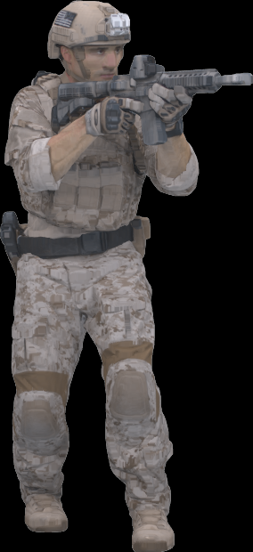

本問卷共有 24 張渲染影像，每張需在三個面向評分。
畫面左側為Ground Truth（參考圖），中間為待評分渲染圖，請直接比較後於右側評分。
如有疑問，請點選「顯示評分標準」查閱各分數說明。
進度：0 / 72 題已作答（0%）
維度一 — 整體感知保真度
5與 Ground Truth 幾乎無法區分，無明顯偽影。
4輕微色偏或模糊，但整體外觀可辨認度未受影響。
3中等程度模糊或色偏，物體輪廓仍可辨識但明顯退化。
2明顯扭曲或出現浮動偽影，物體僅部分可辨認。
1嚴重退化，物體形狀無法辨認或幾乎為雜訊。
維度二 — 邊緣與輪廓完整性
5所有邊緣清晰、連續，與 Ground Truth 精確對齊。
4大部分邊緣清晰，僅有輕微鋸齒或局部偏移。
3邊界模糊或有局部斷裂，影響輪廓連續性。
2邊界明顯碎裂或出現浮動偽影，輪廓難以追蹤。
1物體邊界幾乎無法辨認或與背景融合。
維度三 — 高頻紋理細節
5細部紋理清晰可辨，圖案與銳利度貼近 Ground Truth。
4多數紋理可見但稍微柔化，細部圖案輕微流失。
3紋理可見但明顯平滑化，圖案結構模糊不清。
2大部分表面細節流失，僅剩大面積色塊。
1表面完全平滑，無任何可辨識紋理。
Ground Truth（參考）

渲染圖

載入中...